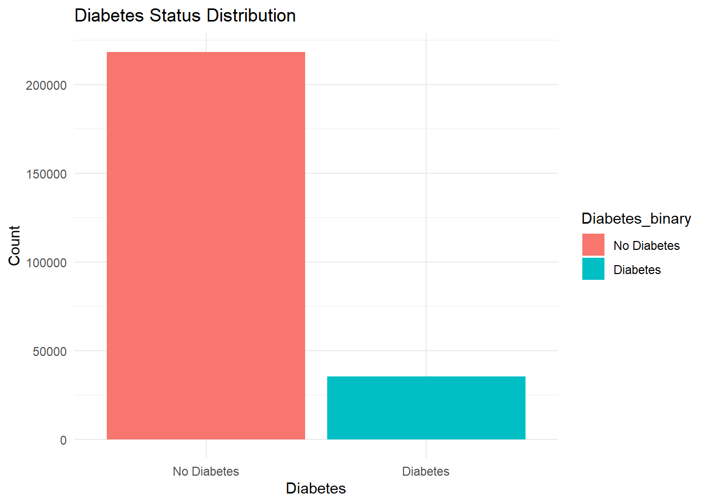
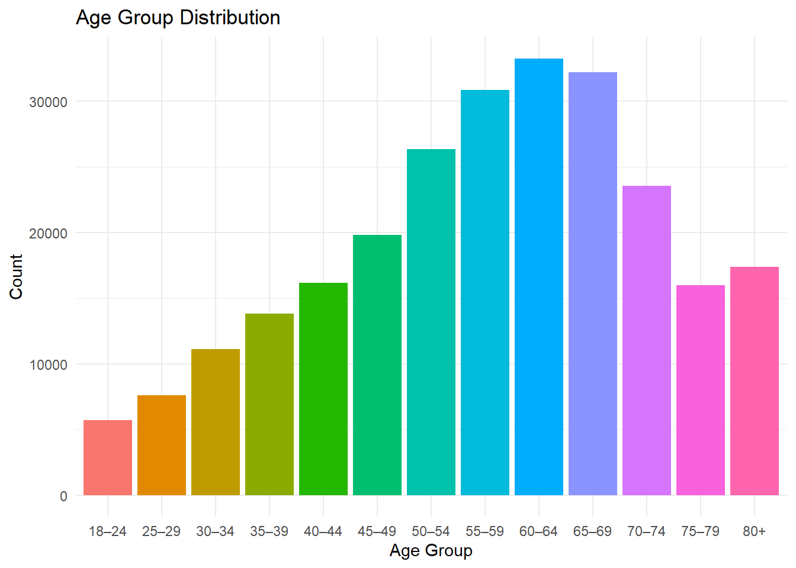
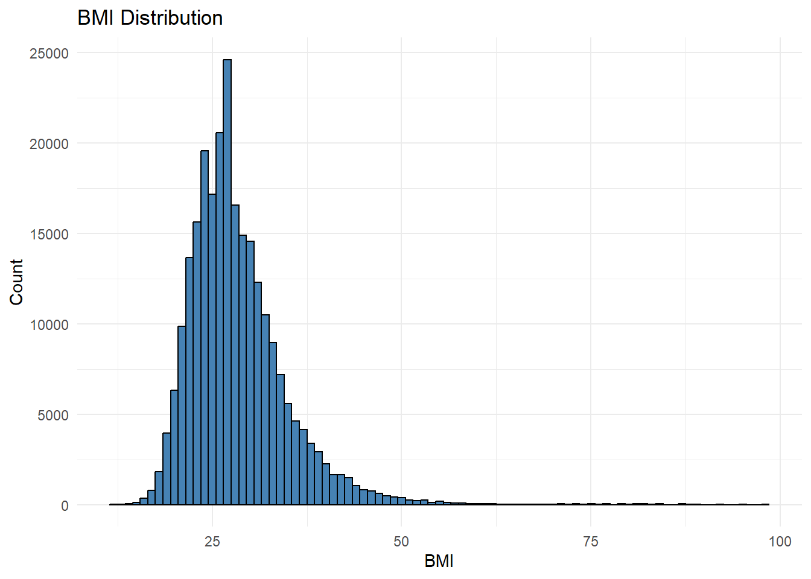
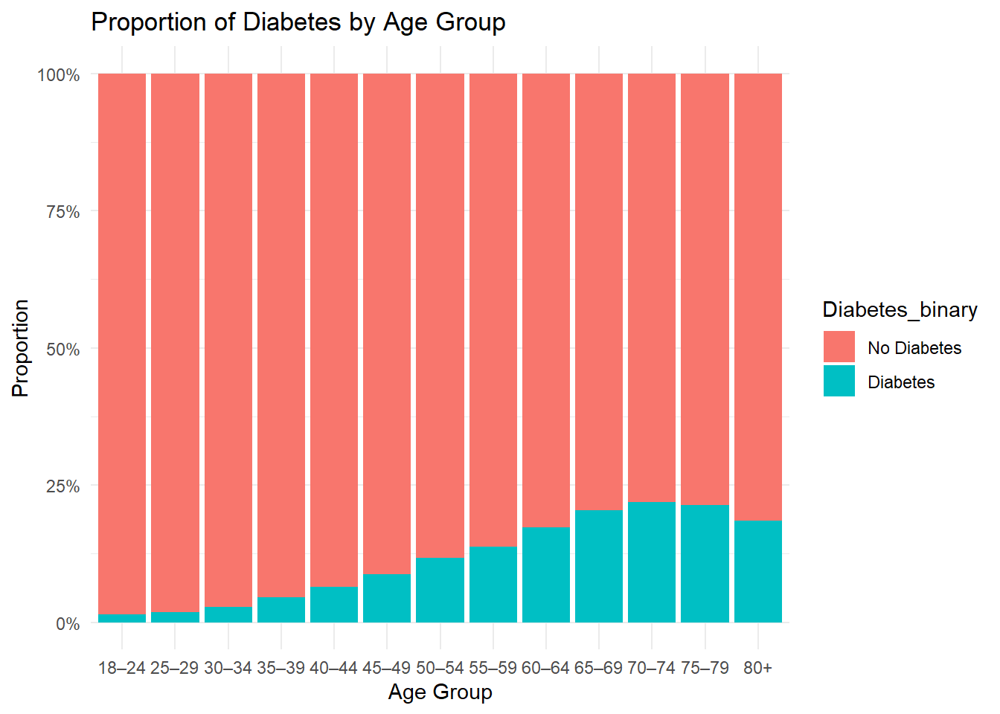
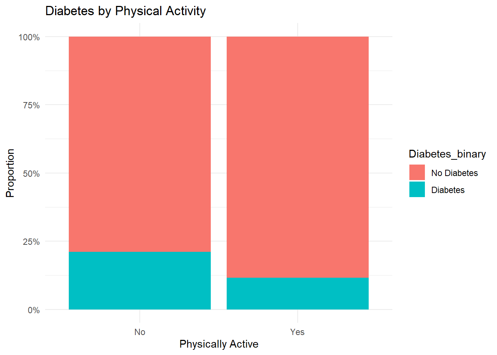
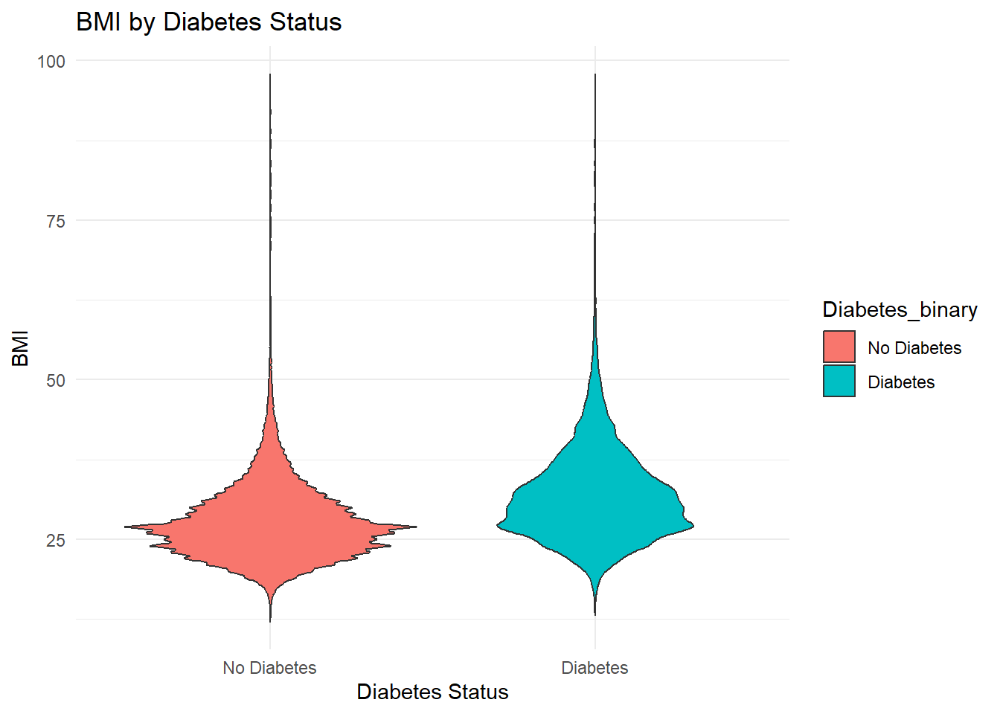
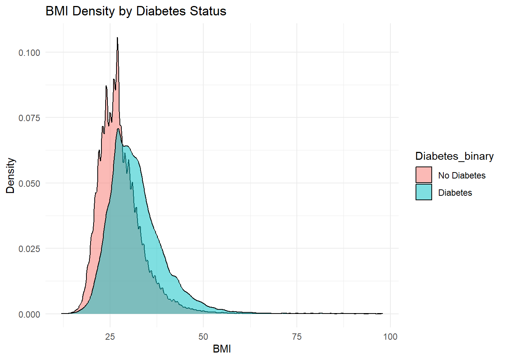

For this EDA I will explore Age, Physical Activity, and BMI, as all three variables have strong well established links as risk factors for Diabetes.
Physical Activity helps regulate blood glucose, and constant sedentary behavior has been linked to increases diabetic risk.
Age leads to diabetic incidence rising as beta-cell function declines
BMI is a well established risk factor and high amount of fat lead to insulin resistance
Purpose of the EDA
The purpose of this exploratory data analysis is to gain a better understanding of the variables within the data set and identify potential predictors of diabetes. By examining distributions and relationships between the selected predictors and diabetes status we can discover insights than will inform our modeling.
The ultimate goal of modeling is to develop a predictive model that can accurately classify individuals as being diabetic or not diabetic. This model could be used with a broader strategy of supporting early identification and preventive strategies.
# Read In packageslibrary(tidyverse)
Warning: package 'tidyverse' was built under R version 4.4.3
Warning: package 'ggplot2' was built under R version 4.4.3
Warning: package 'tibble' was built under R version 4.4.3
Warning: package 'purrr' was built under R version 4.4.3
Warning: package 'lubridate' was built under R version 4.4.3
── Attaching core tidyverse packages ──────────────────────── tidyverse 2.0.0 ──
✔ dplyr 1.1.4 ✔ readr 2.1.5
✔ forcats 1.0.0 ✔ stringr 1.5.1
✔ ggplot2 3.5.2 ✔ tibble 3.3.0
✔ lubridate 1.9.4 ✔ tidyr 1.3.1
✔ purrr 1.1.0
── Conflicts ────────────────────────────────────────── tidyverse_conflicts() ──
✖ dplyr::filter() masks stats::filter()
✖ dplyr::lag() masks stats::lag()
ℹ Use the conflicted package (<http://conflicted.r-lib.org/>) to force all conflicts to become errors
#Read in datadata_raw =read_csv("diabetes_binary_health_indicators_BRFSS2015.csv")
Rows: 253680 Columns: 22
── Column specification ────────────────────────────────────────────────────────
Delimiter: ","
dbl (22): Diabetes_binary, HighBP, HighChol, CholCheck, BMI, Smoker, Stroke,...
ℹ Use `spec()` to retrieve the full column specification for this data.
ℹ Specify the column types or set `show_col_types = FALSE` to quiet this message.
Diabetes_binary HighBP HighChol CholCheck
No Diabetes:218334 Min. :0.000 Min. :0.0000 Min. :0.0000
Diabetes : 35346 1st Qu.:0.000 1st Qu.:0.0000 1st Qu.:1.0000
Median :0.000 Median :0.0000 Median :1.0000
Mean :0.429 Mean :0.4241 Mean :0.9627
3rd Qu.:1.000 3rd Qu.:1.0000 3rd Qu.:1.0000
Max. :1.000 Max. :1.0000 Max. :1.0000
BMI Smoker Stroke HeartDiseaseorAttack
Min. :12.00 Min. :0.0000 Min. :0.00000 Min. :0.00000
1st Qu.:24.00 1st Qu.:0.0000 1st Qu.:0.00000 1st Qu.:0.00000
Median :27.00 Median :0.0000 Median :0.00000 Median :0.00000
Mean :28.38 Mean :0.4432 Mean :0.04057 Mean :0.09419
3rd Qu.:31.00 3rd Qu.:1.0000 3rd Qu.:0.00000 3rd Qu.:0.00000
Max. :98.00 Max. :1.0000 Max. :1.00000 Max. :1.00000
PhysActivity Fruits Veggies HvyAlcoholConsump
No : 61760 Min. :0.0000 Min. :0.0000 Min. :0.0000
Yes:191920 1st Qu.:0.0000 1st Qu.:1.0000 1st Qu.:0.0000
Median :1.0000 Median :1.0000 Median :0.0000
Mean :0.6343 Mean :0.8114 Mean :0.0562
3rd Qu.:1.0000 3rd Qu.:1.0000 3rd Qu.:0.0000
Max. :1.0000 Max. :1.0000 Max. :1.0000
AnyHealthcare NoDocbcCost GenHlth MentHlth
Min. :0.0000 Min. :0.00000 Min. :1.000 Min. : 0.000
1st Qu.:1.0000 1st Qu.:0.00000 1st Qu.:2.000 1st Qu.: 0.000
Median :1.0000 Median :0.00000 Median :2.000 Median : 0.000
Mean :0.9511 Mean :0.08418 Mean :2.511 Mean : 3.185
3rd Qu.:1.0000 3rd Qu.:0.00000 3rd Qu.:3.000 3rd Qu.: 2.000
Max. :1.0000 Max. :1.00000 Max. :5.000 Max. :30.000
PhysHlth DiffWalk Sex Age
Min. : 0.000 Min. :0.0000 Min. :0.0000 Min. : 1.000
1st Qu.: 0.000 1st Qu.:0.0000 1st Qu.:0.0000 1st Qu.: 6.000
Median : 0.000 Median :0.0000 Median :0.0000 Median : 8.000
Mean : 4.242 Mean :0.1682 Mean :0.4403 Mean : 8.032
3rd Qu.: 3.000 3rd Qu.:0.0000 3rd Qu.:1.0000 3rd Qu.:10.000
Max. :30.000 Max. :1.0000 Max. :1.0000 Max. :13.000
Education Income AgeGroup
Min. :1.00 Min. :1.000 60–64 :33244
1st Qu.:4.00 1st Qu.:5.000 65–69 :32194
Median :5.00 Median :7.000 55–59 :30832
Mean :5.05 Mean :6.054 50–54 :26314
3rd Qu.:6.00 3rd Qu.:8.000 70–74 :23533
Max. :6.00 Max. :8.000 45–49 :19819
(Other):87744
All data has been factored and there is no missingness in the data set.
Univariate Exploration
Diabetes Proportion
The first thing we’re going to check is the proportion of diabetics in the data set. This gives us an idea of the data we are working with and what to check moving forward.
diabetes_data %>%count(Diabetes_binary) %>%mutate(Percent = n /sum(n) *100)
# A tibble: 2 × 3
Diabetes_binary n Percent
<fct> <int> <dbl>
1 No Diabetes 218334 86.1
2 Diabetes 35346 13.9
diabetes_data %>%ggplot(aes(x = Diabetes_binary, fill = Diabetes_binary)) +geom_bar() +labs(title ="Diabetes Status Distribution",x ="Diabetes",y ="Count") +theme_minimal()

Through this we can see that there is a far larger proportion of non diabetics in the data set.
Age Group Distribution
Next we’re going to check the age group distribution across the data set. The original data set had age groups assigned to one of 13 factors. That factoring was removed in the original age brackets were established for better readability
diabetes_data %>%ggplot(aes(x = AgeGroup, fill = AgeGroup)) +geom_bar() +labs(title ="Age Group Distribution",x ="Age Group",y ="Count") +theme_minimal() +theme(legend.position ="none")

While there is a large range of individuals in the data set, the large majority of participants are older.
Physical Activity
Next we’re going to analyze What proportion of the participants are physically active, This gives us an idea as physical activity is highly correlated to diabetic outcomes.
Here we can see that a majority of the data set does self report as physically active. This might explain the low diabetic population proportion within the data set.
BMI
Next we’re going to analyze the BMI distribution across the entire data set. This allows us to see if we have an abnormal distribution of exceedingly high BMI in the population data set.
diabetes_data %>%ggplot(aes(x = BMI)) +geom_histogram(binwidth =1, fill ="steelblue", color ="black") +labs(title ="BMI Distribution",x ="BMI",y ="Count") +theme_minimal()

Here we can see that the population distribution centers around the mid 20s with a long tail. This indicates a relatively normal population with average BMI’s however there are significant outliers as BMI stretch all the way up to the mid 90s.
Bivariate exploration
Diabetes by age group
Here we want to explore how the proportion of individuals with diabetes varies across age groups and this allows us to assess whether diabetic outcomes tend to increase with age.
diabetes_data %>%ggplot(aes(x = AgeGroup, fill = Diabetes_binary)) +geom_bar(position ="fill") +labs(title ="Proportion of Diabetes by Age Group", x ="Age Group", y ="Proportion") +scale_y_continuous(labels = scales::percent) +theme_minimal()

The graph shows that diabetic outcomes tend to increase with age. However the trend appears to slow down with the oldest of age groups, which might indicate some survivorship bias as individuals who reach advanced age without developing diabetes may have protective factors that reduce their risk.
Diabetes and Physical Activity
Regular physical activity is recommended to reduce the development of type 2 diabetes by improving insulin sensitivity. In this section we can explore the relationship between self reported physical activity and diabetic status.
diabetes_data %>%ggplot(aes(x = PhysActivity, fill = Diabetes_binary)) +geom_bar(position ="fill") +labs(title ="Diabetes by Physical Activity", x ="Physically Active", y ="Proportion") +scale_y_continuous(labels = scales::percent) +theme_minimal()

In this graph we can see how physical activity does show a lower proportion of diabetics The graph shows that individuals who report engaging in physical activity tend to have a lower proportion of diabetic outcomes compared to those who do not.
Diabetes Vs BMI
The body mass index has widely been used as an indicator for categorizing individuals as underweight normal weight or overweight. Given that elevated BMI is a major risk factor for type 2 diabetes the section examines how BMI values differ between individuals with and without diabetes.
diabetes_data %>%ggplot(aes(x = Diabetes_binary, y = BMI, fill = Diabetes_binary)) +geom_violin() +labs(title ="BMI by Diabetes Status", x ="Diabetes Status", y ="BMI") +theme_minimal()

This violin plot reveals that individuals diagnosed with diabetes tend to have higher BMI values compared to those who are not. While there is overlap in the distributions the median and density bulge of the diabetic group lies further up indicating that individuals with diabetes are more likely to fall into overweight or obese categories.
diabetes_data %>%ggplot(aes(x = BMI, fill = Diabetes_binary)) +geom_density(alpha =0.5) +labs(title ="BMI Density by Diabetes Status", x ="BMI", y ="Density") +theme_minimal()

Further the density plot clearly shows that peak BMI for non diabetic Individuals is lower and more narrowly distributed centered around 25. Meanwhile the distribution for diabetic individuals is shifted right with a flatter curve that extends into higher BMI ranges. This supports the association between increased fat and diabetic prevalence and reinforces BMI as a strong candidate predictor.